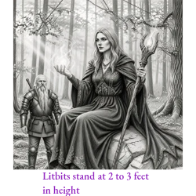
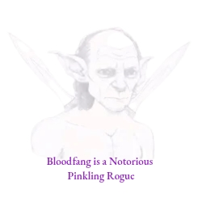

Playable Races
Playable Races defines the peoples chosen as Characters, establishing how Firstborn, Kinborn, Bloodlines, Culture and relationships through Standing structurally build your hero. In SORC, choosing your Character sets their physical presence at the table, mapping out how their size, culture, innate biological traits, and deep-seated traditions shape starting identity, through their Legacy†.
†Each Character, if they survive, must retire as an NPC after 40 years of game time. Your Character can be visited by new Characters you create, and you can continue to choose their Growth stats (see Growth) as time goes on. Characters can retire as foul Hermits with bounties on their head or as an honored Legend of your hometown where patrons of certain cities sing and celebrate your existence - but not so much in cities of rival factions.
The entries below systematically guide you from this foundational racial framework directly into the diverse, playable populations of Zailister. From there, your journey expands outward to uncover the exotic, ancient Races recorded from other distant worlds across the vast reaches of Essentia.
How the Races Are Sorted
Firstborn Races are the foundational peoples of Essentia, each with their own base sizes, vitality and other innate statistics. Every Race listed at the top level is a Firstborn. Kinborn are variant populations descended from a Firstborn Race, carrying the same Race size, heritage, and language but with some differing base statistics, language dialects, their unique ancestry and adaptation to different environments or circumstances.
Firstborn
Firstborn is the foundational, pure ancestral Race of a people. Serving as the baseline framework for Character creation, every core playable population listed at the top level originates as a Firstborn.
A Firstborn Race establishes a Character’s definitive biological template, dictating their base physical size (Goliath, Standard, or Small), lifespan, starting attribute floors, and core pools for vitality, mana, and stamina. Additionally, a Firstborn identity passes down a shared native language and permanent, passive biological traits known as Innate Aptitudes and Inaptitudes.
While all Characters must select a Firstborn template, how that Race manifests depends entirely on its structural line:
- Standalone Firstborns (like Humans) have no further sub-divisions; every member shares identical base stats and is shaped strictly by the culture that raised them.
- Branching Firstborns split at Character creation into either Kinborn sub-Races (which mutate base physical stats due to environment) or Bloodlines (which alter magical hues and cultural traits over the same physical template).
Kinborn
Kinborn is a variant sub-Race descended from a primary Firstborn lineage. They represent populations that have physically mutated, adapted, or diverged from their ancestral cousin Race due to extreme environmental conditions, unique histories, or geographic isolation.
While a Kinborn Character retains their parent Race's fundamental base size tier, native language, and overarching heritage, they diverge heavily in their baseline mechanics. Specifically, choosing a Kinborn variant overrides the standard Firstborn template by introducing:
- Differing Base Statistics: Permanent adjustments to a Character's core Attribute Scores (ATTR) to match their physical evolution.
- Unique Passive Traits: New, specialized biological or survival mechanisms tailored to their home terrain (such as an Arctic Dwarf's total immunity to frostbite or a Mountain Troll's cliff-scaling agility).
- Language Dialects: Regional or cultural variations of the baseline Firstborn tongue.
Unlike Bloodlines - which merely shift a Character's magical or psychic color without touching racial rules - Kinborn variants represent a literal physical reshaping of the body's starting template. Classic examples within Zailister include the Ash Dwarf (adapted to volcanic forge stone) and the Sand Troll (adapted to shift seamlessly through desert dunes).
Kinborn Example: The Dwarf is a Standard Size Firstborn. The Ash Dwarf is a Kinborn, descended from Dwarves but adapted to different stone and terrain, carrying different base stats than their Firstborn cousins.
Bloodlines
Bloodlines represent a variant mechanic of a Character's Firstborn Race where the population is split into different distinct "hues" or cultural lineages. Rather than rewriting base racial rules, statistics, or innate traits, a Bloodline acts as a custom background layer chosen at Character creation. Each specific Bloodline introduces its own unique gameplay mechanics, such as tailored bonuses, elemental aptitudes, favored class options, and distinct cultural histories.
Unlike Kinborn sub-Races which physically alter base statistics, Bloodlines focus on magical, psychic, or lineage-driven coloring over a single shared physical template. Only two playable Firstborn populations carry these variations:
- Drāco Blood: Dragon-blooded humans split across six elemental lineages (Red, Blue, Black, White, Green, and Gold). A player's choice of hue directly dictates their dragon-magic affinity and severe elemental vulnerabilities.
- Imperials: Frail, highly charismatic, and psychically active humans whose six ancient lineages (Crimson, Onyx, Citrine, Violet, Azure, and Verdant) determine their distinct historical societies, armament traditions, and political philosophies.
Because there is no "default" or plain version of these two Races, players must choose a specific Bloodline during Character creation.
Bloodlines Examples: The Imperials are a Firstborn Race. Crimson, Onyx, Citrine, Violet, Azure, and Verdant Imperials share the same base statistics, Traits, and Innate Abilities. Their Bloodlines are cultural lineages: each carries different customs, histories, Armament traditions, and relationships to class and Higher Power culture, but no Bloodline changes the Imperial racial rules.
Culture
Culture and Background. A Character's Culture is first determined by the Background chosen at creation, which grants access to that culture’s specific store and overrides regional scarcity. For example, a secret Nordian recipe for "Nord Feast" is rarely found on Omnè, and Omnè Technologically Advanced Weapons (TAW) are scarce on Zailister. Yet, your starting Background lets you begin with these items at creation, unless the GM rules otherwise. Since Culture is a lifestyle sought out at Creation, items don't lose or gain their values based on Culture, regardless of where the Character is.
You can neglect your culture at any time by actively ignoring its traditions. From there, you may also seek out a new culture and style entirely. To adopt a new culture, your Character must physically find it in the world and establish Standing with them. Shifting your way of life carries a heavy social cost: successfully building Standing with a new group triggers SORC’s rules on Standing Praise and Blowback. Gaining traction with your new allies will earn you Praise, but it will simultaneously cause Blowback with their historical rivals. If your original culture from creation is an enemy of the group you have chosen to join, the resulting Blowback will likely drain and ultimately erase all your original Standing.
Cultural Example
The Omnè are further advanced in technology than any other human culture, not because they are more inherently intelligent than other humans, but because they are the most ancient of all human cultures and their development further away from the main sun Adoria, hadn't allowed them to rely on magic.
If lore holds true, with the exception of Trolls, the Fae predate every other Race in Essentia, the oldest people in the world's history, present in the earliest myths of every culture that came after them. Their true homeworld is Tenue, a planet riding a similar orbital path to Zailister, just a bit closer to Adoria, shielded from that closeness by the same dense magical overgrowth that keeps its surface temperate. Fae are also native to Zailister itself, through the Veilwood, a hidden plane within Zailister's own forests that opens directly onto Tenue, grown from that same overgrowth. Veilwood is the heart of all magical and enchanted forest on Zailister, every enchanted grove and Fae-touched wood on the planet tRaces back to it, however distant, and Veilwood itself holds a direct magical path straight to Tenue. Fae are not yet available as a playable Race in these rules. More on Tenue, and every other world, can be found in its own planetary volume.
The Primal of Ignis are people whose lineage reaches back nearly as far as the Fae's, though theirs is the oldest continuously practiced way of life rather than the oldest Race outright, see Playable Races from Afar. Despite their close physical resemblance to humans, Primal are their own distinct Race and are inherently stronger.
Ignis is home to two playable Races; the Emberscale and the Primal (see Playable Races from Afar below).
Planet Two: Tenue
Tenue sits only barely closer to Adoria than Zailister, sharing a similar orbital path just nearer to Adoria, and that nearness is exactly where its magic comes from. By every measure of distance alone, Tenue should run hotter than Zailister. It doesn't. Tenue is cooler, its landscapes held temperate by the dense magical overgrowth blanketing the surface, foliage grown thick and old, fed by Adoria's raw magic at close range, and strong enough to turn back the sun's heat on its own.
Despite the cooler air, Tenue is never dim, unless underground, home of the Drow. It experiences blinding light during the day, and at night the skies stay bright, held that way by its neighboring third planet, which reflects Adoria's light back across Tenue's surface even after dark. Tenue has no moon of its own.
Tenue is the true homeworld of all Fae, and the source of the same magical overgrowth that protects it, overgrowth that reaches all the way to Zailister as the Veilwood, an enchanted forest holding a direct path between the two worlds.
Tenue isn't as hot as Zailister, even sitting closer to Adoria, because of the magical overgrowth protecting it.
Choosing a Race
Whether a Player wants to embody a mighty Ogre pounding his way through any type of environment, a gRaceful Elf stalking potential danger to protect the Veilwood, a resilient Ash Dwarf crafting deep within Mt. Greyface, or a clever Ratkin navigating dangerous burrows of Dead tooth's treacherous desert land, SORC provides a rich tapestry of Races to explore. Race diversity is just the first array of different ways of playing SORC that makes every journey unique in developing your Character.
The selection of playable Races in SORC offer a vast and diverse array of options for adventurers, ranging from towering Goliaths to tiny, yet cunning, Small folk. Each Race has its own Traits that they are either strong in, weak in or balanced to, its own cultural backgrounds, often shared with others, and physical Characteristics, allowing Players to craft Characters that fit their preferred playstyle.
Also see Species for further details on Races categorically. Species are the broad, universal classifications used to group living beings across Essentia—such as Humanoid or Reptilian. A Race is a specific lineage or population across the universe that provides distinct genetic or cultural traits. When selected during character creation, a Race supplies that character's mechanical rules; notably, a single Race may fit under more than one Species classification. You can study these biological groupings and their structural examples by reading exhaustive details in the Book of Behemoths, Beasts & Bugs. Or, for a quick summarized reference of these definitions, you can consult the Glossary at the back of this book.
Culture
Culture in SORC is not one thing, it is a set of them. A Character's Race sets their body; their Culture sets what that body was raised into, and it is drawn from several sources at once. None of them change a Character's Traits or Stats, two Humans have identical numbers whether one was raised Omnè and the other Nordian, what differs is what each was taught, what each has access to, and what each is expected to refuse.
Geographic Habitation
SORC records locations in this descending order in terms of size: Universe, Planet, Continent, Island, Territory, Region, and Area. Depending on the scope of the entry, it may list a broad origin like the Character’s Native Planet, or it may narrow focus down to a specific Region and localized Area (such as a city, village, camp, or underground ruins).
Age
A Character may begin up to 5 years younger or 5 years older than any given Race’s Base Age. The 5 year younger point never falls below the age of that Race's adulthood. For instance, a Human Character is 18 at adulthood, the base age for a human is 23, allowing the Player to choose an age 5 years under or older than 23; 18 - 28. Each Character retires 40 years after the chosen starting age.
Also see Growth for further details on what happens as a Character Ages.
Culture Types
- Race - the people a Character is born to, and the homeworld or region behind them (Omnè and Nordian Humans, Bridge and Mountain Trolls, the Primal of Ignis, the Fae of Tenue). See each Race's own entry below.
- Background - the upbringing chosen at creation, which can override birth entirely. Any Culture in Essentia may be taken by any Race through Background, Race sets no limit on it. A Dwarf raised among the Omnè counts as Omnè for cultural purposes, an Orcus raised Nordian counts as Nordian, and a Human raised among the Fae counts as Fae (see Backgrounds, above).
- Class - a Path or Branch is itself a culture, with its own training, rites, tools, and taboos. This is the culture that decides which weapons a Character's Abilities are performed with, and which their tradition refuses outright (see below).
- Higher Power - the patron a Character devotes to at LVL 4, which carries its own observances, its own foes, and its own list of traditions it will not share a Character with (see Higher Power, below).
- Regional - where the campaign is set, which governs what is common to find, buy, or craft versus what is rare (see Cultural Armaments & Rarity, Appendix).
Culture in Play
Here we'll use Humans to describe this section because they hold no category to identify their lineage other than Firstborn. Humans carry no Bloodlines and no Kinborns, every Human holds the same base stats, and what separates one from another is the culture they were raised by determined by their Background.
A few notable human Cultures to mention are; Nordian, Eldrim, Tanu'la, and Xo'kajal. There are Humans from planets outside of Zailister as well, but they do not recognize the term “Human”. The Omné and Tredeki to name two sharing the same name as their respective native planets.
Appearance
In SORC different Races have different skin tones - face, ears, eyes, teeth shapes, sizes - shapes and colors, base innate stats and sizes, and so forth. While creating their Character, Players can choose an array of all of these details as they record them into their Character Sheet. These details can be penciled in on paper sheets or typed in using our PDF Character Sheet editor. Players can also draw their Character's appearance in an empty Portrait Box with an optional low opacity outline of the Character’s Race’s base size and gender, or they can commit the option of printing the outline.
Players can also use our digital Character Customizer to adjust their appearance via slider options, for hair, eye, skin, face paints and scars, tattoos, etc. Characters body types are determined by the Races default physique, from; thin, standard, lean, muscular, obese and massive. The physique score does not need to be punched in, displaying the default body type of the character's race and gender. Character may also display their Readied Armaments, with the last they have worn as default, or they can also choose their street clothes. As the background, Players choose a "Safe Haven" confirmed as safe by their teleporting device, the Animated Compass. Furthermore, Companions may also be displayed.
Examples
Trolls begin as a lean body type, and sport various hues of green, pink, purple, blue, red, yellow, ivory, onyx and so more, with flamboyant eye and hair colors as well.
Humans use the Fitzpatrick Scale for players to identify as available skin tones for their Character (s). These tones are demonstrated below, and when using the Character Customizer, Players use a slider to choose their Humans’ skin tone.
Fitzpatrick Scale
Skin Type | Visual Description | Sun Reactivity (Burn vs. Tan)
Type I — Visual Description: Ivory / Very Pale White skin; often paired with red or blonde hair and blue/green eyes. — Sun Reactivity (Burn vs. Tan): Always burns, never tans. Extremely sensitive to UV light.
Type II — Visual Description: Fair or Light White skin; typically paired with light hair and blue/hazel eyes. — Sun Reactivity (Burn vs. Tan): Burns easily, tans minimally. Very sensitive to sun exposure.
Type III — Visual Description: Medium White to Olive skin; dark hair and any eye color. — Sun Reactivity (Burn vs. Tan): Sometimes burns mildly, gradually tans to a light brown.
Type IV — Visual Description: Olive or Light Brown skin; dark brown or black hair and dark eyes. — Sun Reactivity (Burn vs. Tan): Rarely burns, tans easily and deeply.
Type V — Visual Description: Dark Brown skin; dark hair and dark eyes. — Sun Reactivity (Burn vs. Tan): Very rarely burns, tans darkly and quickly.
Type VI — Visual Description: Deeply Pigmented Dark Brown to Black skin; black hair and dark eyes. — Sun Reactivity (Burn vs. Tan): Never burns, deeply pigmented and always tans darkly.
Races also have other default physical features that distinguish them between one another. Base Size, Physique and various features and Characteristics to name a few.
Race Class Choices
Every Race carries a list of Favored Classes, granting +5, and Averse Classes, taking -5 (see Favored and Averse Class Bonuses, below, and each Class's own entry, Basic Rules pg. 3). These are cultural, not biological: they reflect which traditions a people have long practiced and which sit at odds with how they live, not any limit on what a Character may become. A Race averse to a Class may still take it and excel, they simply start further back than someone raised to it.
A Main Class Tier (Levels 1-3) carries no Culture advantages or disadvantages of its own. A Main Class's three Paths have no cultural common ground to share. For instance; the Main Class Avenger gives no advantages or disadvantages to a Character based on its Race; however, beginning at level 4, the three Paths of any given Main Class do.
Culture begins at LVL 4, when a Path is chosen, and that Path's Culture governs from there: its weapons, its armor, its forbidden Armaments, its Higher Power. It carries through the Branch unchanged. A Branch is aligned to its own Path, not a fresh tradition, so it inherits that Path's Culture whole rather than starting one of its own. What a Branch may do is state exceptions, specific Armaments its own practice permits or refuses where the Path does not, and those can loosen the Path's Culture as readily as tighten it. Anything a Branch does not name as an exception stays exactly as its Path sets it (see each Class's Tier, Paths and Branches, Basic Rules pg. 3).
Every Tier, Path, and Branch lists the weapons its Abilities are used with, and one must be readied to perform any Ability from that tree; weapons the tradition refuses are listed as Weapons Forbidden under that tree's Culture (see Required Weapons, Appendix). An Avenger is fully capable of swinging a TAW mace, their faith simply does not channel through manufactured technology, so no Avenger Ability comes of it. Basic ATTKs are never restricted this way, any Character may wield any weapon they can carry and attack with it normally (see Basic ATTKs and Ability ATTKs, Basic Rules pg. 5).
A Path's Culture speaks to four things, and a weapon or piece of armor has to clear all four to carry that Path's Abilities:
- Weapon Type and Style - what the tradition fights with, and which Types it refuses outright (see Required Weapons, Appendix).
- Material - what the thing is made of. Some traditions care more about this than about shape: an order that will touch nothing but wood refuses a steel mace and a bone club alike, however well either matches its Style.
- Variant - which Variants the tradition works with, and which it refuses outright (see Armament Variants, Basic Rules pg. 4).
- Armor - what may be worn while its Abilities are used. This is separate from the Armor Grade threshold and works differently, see below.
Armor
A Path's Armor Grade threshold is about weight and mobility. Wearing heavier than the threshold never blocks an Ability - instead, it costs a scaling Armament Penalty, which a high enough Trait score can reduce (see Armament Penalty, Appendix). A Path's Armor Forbidden list is about Culture instead, and no Trait can bypass it: armor a tradition refuses blocks its Abilities outright, the same way a forbidden weapon does, however light the piece happens to be. An order forbidden to metal is barred from a light mail shirt as surely as a heavy plate. Note that an armor's literal weight still impacts your physical movement regardless of its cultural status; refer to the rules on Burden and Encumbrance (pg. …) to calculate your Character's total load.
Readied Armaments
An Ability is performed with what is actually in hand and on the body. Both the weapon and the armor must be readied, and both must satisfy the Culture of whichever Path the Ability is drawn from, before that Ability can be performed at all. Characters therefore assemble Sets, a weapon and an armor loadout chosen together to keep one Path's Abilities available. A Character readies up to three weapons and one armor piece per game day (see Weapons Carried, Basic Rules pg. 4), so a Character drawing on more than one Path should build a Set that clears every Culture they intend to use that day. Where two Paths' Cultures cannot be satisfied at once, one tradition refusing metal while another requires it, that Character carries only one of them into the day and swaps at the next opportunity to change their Armament Set. Basic ATTKs are never part of this, they work with anything (see Basic ATTKs and Ability ATTKs, Basic Rules pg. 5).
Background
Background feeds Culture too. The Background chosen at creation is itself a cultural source and can override Race entirely. Any Race may hold any Culture. There is no pairing a Race is barred from: a Dwarf raised among the Omnè counts as Omnè for every cultural purpose, and the same holds for every other race and Culture in Essentia (refer to Backgrounds). Where a Background and a Path's Culture disagree, both apply, a Character raised to one tradition and trained into another carries the restrictions of each, gaining the full benefits and carrying the full restrictions of each.
Cultural Armaments
Your chosen Culture guarantees access to its native gear at creation, bypassing any regional scarcity. No matter where you are in Essentia, you may purchase Armaments, Equipment, and Items directly from your Culture’s specific store during Character creation. For example, a Pinkling of Omnè Culture can start with Omnè Techad, even if the campaign begins on Zailister - where such items are otherwise incredibly rare.
Every playable Race has Armaments tied to its own people, a Weapon Type, armor style, or technique unique to them. TAW (Technologically Advanced Weapons) and Chthonic are the two best known, but Troll-make weaponry and Ignis's Primal Armaments are equally cultural, and every Race carries its own whether written up yet or not. Each is rare outside that culture's reach and common only when the campaign sits within or near that culture's territory, or the Character belongs to it by Race or Background (see Cultural Armaments & Rarity, Appendix).
Why Omnè and Tredeki run oldest. The first cognitive, civilization-capable life in Essentia arose on Omnè Malum and Tredeki, before any other world, Zailister included (see the Age of Creation). That head start, not any innate edge, is why Omnè and Tredeki carry the oldest continuous manufacturing traditions on record, TAA and Techmat both tRace back to it, and why every younger culture that copies them is doing exactly that, copying.
More to come... Culture is an expanding system. Religion, language, trade, kinship structures, and cultural Prestige are all planned to hang from this section in a later release, along with the full per-Race culture write-ups.
Aptitude and Inaptitude
Aptitude and Inaptitude are Race and Kinborn Gifts or Burdens innately inherited by characters of that race. A Drow's darkvision is an Aptitude, as is a Gnome's ability to speak with burrowing Flora (like some fungi) and Fauna (like small animals). Each race carries innate passive Aptitudes and Inaptitudes, non-combat traits baked into their biology, heritage, and upbringing. These are always active and require no action to use. They cannot be removed, suppressed, or replaced by class choices, though some may be developed further through Talent Trees. Inaptitudes work the same way in reverse: they are permanent frictions that no amount of training fully eliminates, though their penalties can sometimes be offset by other bonuses. Aptitudes and Inaptitudes are separate from Trait scores and ATTR bonuses, they represent what a race simply is, not what a character has learned to do.
Neither side stays frozen at character creation. Every year of age lived, a character's Aptitude advances on its own, following a fixed progression set per race, either deepening an Aptitude they already carry or manifesting an entirely new one at that stage, capped so no single Aptitude scales without limit. This advancement is tied directly to Growth progression. It isn't a choice the Player makes and it isn't random, every character of that race advances through the same set sequence, it just happens as a natural part of aging. Inaptitude eases the same way but far more slowly: once every ten years of age lived, its penalty softens by a small, fixed amount, also following that race's set progression. It never fully disappears, a lifetime of living around it only takes the edge off.
Example, Drow:
- Dark Vision (Improved) - an early stage of natural growth deepens the Drow's existing Aptitude: sight in total darkness sharpens to pick out fine detail and faint color, and a sudden flare of bright light no longer briefly blinds and disorients them.
- Earth Mastery - a later stage of growth manifests an entirely new Aptitude instead: tunnels through loose earth or soil at 5 feet per turn; cannot burrow through solid stone or worked structures, and cannot attack while burrowing.
- Earth Mastery (Improved) - later still, Earth Mastery itself deepens further: burrow speed increases to 10 feet per turn, and while burrowing the Drow can sense footsteps and movement through the earth around them within 15 feet. This is as far as Earth Mastery grows.
Each starter race lists Favored affinities for Class Trees, Professions, Talent Trees, and Companions. Favored Professions grant bonus Experience (XP) toward Expertise Tiers (Apprentice, Journeyman, Expert, Artisan, Master, Grandmaster). Favored Talent Trees grant +1 to Talent rolls in those trees. Favored Companion types bond in half the normal time at 25% reduced upkeep. Note: Innate Abilities can be developed further through Talent Trees; if a Talent supersedes an innate inability, the Talent takes precedence.
Favored Class Tree Bonuses
A race lists Favored Class Trees, and across its entire Favored list, only one Path may carry a deeper bonus, and only one Branch nested under that same Path may carry the deepest bonus. Every other Main Class Tree, Path, or Branch listed gets the flat bonus only.
A Favored Main Class Tree grants +5 to all Ability rolls made in that Class Tree. The single chosen Favored Path instead grants +7, total, replacing the flat +5 for that Path, and the single chosen Favored Branch instead grants +9, total, replacing the flat +5 for that Branch.
This bonus does not apply to Aptitude or Miracles.
Each race's Innate Trait bonuses and penalties are listed below.
Innate Trait Alignment with Attributes
Each Trait has an associated Attribute. A positive innate Trait value sets a minimum for that Attribute: its score must be at least the highest positive Trait value associated with it, not the sum of those values. Attribute scores and their starting floors cannot be lower than 0. Trait values may be negative, but a negative value remains a Trait modifier and never makes its Attribute score or floor negative. For example, Agility +3 and Strength −3 both affect Physique: the starting Physique score must be at least +3, while Strength retains its −3 Trait modifier. When all Traits associated with an Attribute are negative, they do not lower that Attribute's score or floor below 0.
Native Abilities and Favorites
Each race has its own Native Abilities, determined by the lands and environments where its people developed. These include the race's Aptitudes and Inaptitudes, along with its Innate Traits and Innate Abilities. Native Abilities describe what a race naturally brings to a Character before training, Class, or equipment.
Races also have Favorites, such as Favored Classes, Professions, Talent Trees, and Companions. Favorites identify the traditions a race most naturally supports and help guide the alignments and armaments associated with those traditions. The chosen Path's Culture determines the exact alignment and armament restrictions; a Favorite provides an affinity and bonus, not a prohibition against choosing something else.
Favorite Variants
Each Favorite may name one or more Variants, showing the specific form of that affinity. A Favored Class may identify a Main Class, Path, or Branch; a Favored Profession may identify a discipline or specialty; a Favored Talent Tree may identify a branch or talent line; a Favored Companion may identify a type, size, or role; and a Favored Armament may identify a weapon family, material, or armament Variant.
A Kinborn or Bloodline inherits its parent race's Favorites and Favorite Variants unless its own entry changes them. When a Variant entry adds, replaces, or narrows a Favorite, that entry takes precedence for the Character. Favorite Variants carry the same alignment and armament affinity as the Favorite they refine, unless the entry states an exception.
Favorite Main Classes Tree Abilities
Favorite Main Classes Tree Abilities identify the specific Main Class Tree, Path, or Branch a race favors. They use the established Favored Class Tree bonus: +5 for a Favored Main Class Tree, +7 for the one selected Favored Path, and +9 for the one selected Favored Branch nested under that Path. The Character must still meet the Path's alignment requirement and the Path's Culture still governs its exact armament restrictions.
Playable races are grouped below by size, the Zailister sizes first and the races from other planets after them. A race sets the body a character starts with: its Innate Trait adjustments, its starting ATTR floor, its Aptitude and Inaptitude, its lifespan, and the Classes and Companions it favors. Size decides reach and fit at the table, what a Goliath can put a hand on and where a Small race can go.
How the Races Are Sorted
Races are listed by Size first, Goliath, Standard, then Small. Within a Size they are listed by Firstborn, and a Firstborn may carry Bloodlines, Kinborn, or neither.
- Firstborn, the race itself. Every race has one.
- Bloodlines are their Firstborn in a different hue, each carrying bonuses that set it apart from the others. A Firstborn with Bloodlines has no default, and one is chosen at creation.
- Kinborn are sub races of their Firstborn, carrying different base stats. Not every Firstborn has them.
Example, Bloodlines. The Imperials are a Firstborn. Crimson, Onyx, Violet, Azure and Verdant are its Bloodlines, the same Imperial in a different hue, each with bonuses of its own. There is no plain Imperial to play, so a character is one of them. Drāco Blood runs the same way, six hues over the one Firstborn.
Example, Kinborn. The Dwarf is a Standard Size Firstborn. The Ash Dwarf is its Kinborn, carrying different base stats.
Example, neither. The Glimmerstone is a Small Size Firstborn in its own right. It has no relation to the Standard Size Dwarf, and it carries no Bloodlines and no Kinborn.
Goliath Size Races
Goliaths are towering beings, typically standing between 7 to 9 feet tall, known for their impressive strength, endurance, and commanding presence.
Base Life: 60 | Base Mana: 24 | Base Stamina: 40 | Base Endurance: 35 | Base Speed: 40 ft. | Base Carry: 200 lbs | Size Bonus: +1 Strength, +1 Toughness | Size Penalty: -1 Agility, -1 Defense
Goliaths have the highest Stamina, Strength and Speed of any size tier, built for sustained physical dominance. Their Mana pool is lower than Standard and Small, while their mass favors physical strength and vigor over magical capacity.
Bast
Bast are tall, agile feline people who approach conversation and competition with quick wit and a careful eye for opportunity. Their balance and reflexes help them avoid a disadvantage rather than meet it head-on; a Bast prefers to spot an opening and act decisively. Their expressive posture and long reach can make a stretch seem larger than it is, while their physical frame remains within the race's recorded size classification.
Centyr
Centyr have a humanoid upper body joined to a hoofed lower body, with horns, ears, tail, and coat reflecting their animal lineage. Their balance and endurance make them natural riders without needing mounts, and their coordination supports both travel and combat. A Centyr stands about 6–7 feet tall; their heavy build, not height alone, places them in the Goliath size category.
Firbolg
Firbolgs are gentle giants with distant Fae lineage and a quiet connection to animals and plants. They communicate simple thoughts without words, move with surprising care for their size, and prefer to defuse conflict or protect the living world around them. Their communities follow seasonal rhythms rather than permanent borders. Patient and difficult to dislodge once committed, Firbolgs treat stewardship as a shared responsibility and act with measured resolve when their home is threatened.
Hawkbear
Hawkbears combine a bear's dense frame with a hawk's beak, keen sight, and feathered features. Flexible skin membranes stretch from wrist to ankle, helping them glide between trees or across open air; powerful legs also make them excellent jumpers. Their stories track journeys by the distance traveled and the views discovered along the way. A Hawkbear's broad build supports a grounded presence, while their wings and membranes make three-dimensional movement central to their way of life.
Ogre
Ogres are large, powerfully built people who favor direct action and clear, earned respect. Their communities value practical deeds, dependable agreements, and strength used with purpose. Many Ogres meet challenges head-on, but their straightforward manner should not be mistaken for a lack of social rules or judgment. Their size shapes how they handle tools, travel, and combat, and their equipment is commonly selected or adapted to fit their frame.
Troll
Common Trolls are resilient, adaptable people with thick, leathery skin and a broad range of practical skills. Their oral histories are counted and recited in a fixed order, preserving accounts without shortening them. Troll tradition places their beginnings in an age associated with the stars and the moon; no home planet is confirmed. Their versatility helps them forage, hunt, craft, and adjust to varied environments, though they rarely pursue one specialty at the expense of all others.
| Bridge Troll - Kinborn | Riddle-wise Traits +2 Wit +1 Deceit Aka City Troll. Prefers cramped dark; edgy in open spaces. Full Kin Card |
| Mountain Troll - Kinborn | Sure-footed climber Traits +2 Toughness +1 Warded. Scales cliffs with ease; poor at diplomacy. Full Kin Card |
| Sand Troll - Kinborn | Dune walker Traits +2 Constitution, +1 Deceit Desert master; sluggish in cold. Full Kin Card |
| Village Troll - Kinborn | Community guardian chose civilization over solitary instincts; protective and dedicated. Full Kin Card |
| Tusk Trolls - Kinborn | Tusk Trolls, from an era begining with the stars and the moon, are resilient generalists who adapt to forests, swamps and mountains, though their flexibility comes at the cost of mastery in any one skil. They sport bottom teeth the side of small tusks-:hence the name and they're skin tones, hair and eyes range from a significant number of hues, from ivory to onyx and almost everything in between. Full Kin Card |
Standard Sized Races
Standard-sized races stand between 5 to 7 feet tall, offering a versatile and balanced physique suitable for a wide range of roles and Abilities.
Base Life: 50 | Base Mana: 32 | Base Stamina: 32 | Base Endurance: 35 | Base Speed: 30 ft. | Base Carry: 100 lbs | Size Bonus: None | Size Penalty: None
Standard races are the most balanced of the three size tiers, equal Mana and Stamina pools with no size-LVL strengths or weaknesses. What they lack in extremes they make up for in flexibility. Endurance is shared across all sizes at 30 and resets daily. Each race within this tier has its own Innate Traits, Aptitude and Inaptitude, Favored Class Trees, companion affinities, Profession bonuses, Talent Tree preferences, and lifespan. These stack on top of the size base above.
Caelen
Caelen are cyborg people whose history was changed by Omnè Astral experimentation and captivity. After escaping to Corpus Caeleste, they adapted the socket technology imposed on them into engineered attachments that serve as weapons and armor. Their machines support exact recall and sustained precision, while their organic needs and mechanical systems require distinct care. Caelen culture values practical engineering, self-determination, and protecting their communities from the Astral forces responsible for the raids.
Drāco Blood
Drāco Blood are people shaped by one of six elemental lineages, each chosen at character creation. Their bloodline defines an elemental aptitude and its opposing weakness, while shared traits include charisma and draconic resilience. Red, Blue, Black, White, Green, and Gold lineages follow different traditions and class paths. Drāco Blood are mortal, and their powers are tied to the elemental rules recorded for their specific lineage rather than to a general dragon-size category.
| Red Draco - Bloodline | Bloodline Magic Fire-blooded Weak to ice. Full Line Card |
| Blue Draco - Bloodline | Bloodline Magic Ice-blooded Weak to fire. Full Line Card |
| Black Draco - Bloodline | Bloodline Magic Shadow-blooded Weak to lightning. Full Line Card |
| White Draco - Bloodline | Bloodline Magic Arcane-blooded Weak to shadow. Full Line Card |
| Green Draco - Bloodline | Bloodline Magic Poison-blooded Weak to Nature. Full Line Card |
| Gold Draco - Bloodline | Bloodline Magic Nature-blooded Weak to poison. Full Line Card |
Dryad
Dryads are plantlike people whose bodies show living wood, leaves, and seasonal growth. Light and water sustain them: photosynthesis converts light into glucose that fuels their growth and survival, so ordinary food is unnecessary. Their appearances vary with individual character and season, while patience and close attention to living surroundings often shape how they approach unfamiliar places. The current rules provide one playable Dryad race.
Dwarf
Common Dwarves are sturdy people known for endurance, craft, and close knowledge of stone and underground spaces. Their communities preserve practical skills in metalwork, masonry, and navigation, and many take pride in goods made to last. Dwarven resilience is matched by a strong sense of responsibility to kin and craft. Their builds are compact and powerful, and their traditions favor well-made equipment suited to long work, confined passages, and demanding journeys.
| Arctic Dwarf - Kinborn | Frost-hardened; Trait +2 Constitution, +1 Warded | Immune to frostbite; wilt in heat. Full Kin Card |
| Ash Dwarf - Kinborn | Forge-born; Trait +2 Warded, +1 Strength | Heat resistant; sluggish in cold and damp. Full Kin Card |
| Red Dwarf - Kinborn | Fire alchemist; Fire magic and jewel crafting master; manipulates fire and its elements. Full Kin Card |
Elf
Elves are graceful, long-lived people with a strong relationship to woodland life and nature magic. Firstborn Elves carry the First Tongue, an ancient form of speech that preserves knowledge tied to old work and magic. Their Fae lineage connects them to Tenue and the Veilwood before their arrival in Zailister. Elves experience time across long spans, treating centuries as chapters in a continuing history rather than as a single lifetime's measure.
| Arch Elf - Kinborn | Eldest line of Elves; Trait +2 Wit, +1 Piety | First Tongue; reads ancient work and magic; distrusts recent methods. Full Kin Card |
| High Elf - Kinborn | Descendants of Arch Elves; versatile spellcasters with deep memory. Trait +2 Agility, +1 Wit | Unfading Memory. Full Kin Card |
| Drow - Kinborn | Dark-dweller; Trait +2 Agility, +1 Wit | Dark Vision, immortal Full Kin Card |
| Vila - Kinborn | Wind-dancer of high meadows; Trait +3 Agility, +1 Intuition | Windstep, immortal. Full Kin Card |
| Haugfolk - Kinborn | Mound-dweller; Trait +2 Toughness, +1 Knowledge | Mound-Hidden, immortal. Full Kin Card |
Gnoll
Gnolls organize around the pack, with shared work and mutual protection shaping everyday life. Leadership is earned by demonstrated ability and recognized by the group, while individuals are expected to contribute to the safety of their kin. A lone Gnoll is unusual, but not without identity or purpose. Their social bonds are strong, and loyalty to the pack often guides decisions more than individual preference or outside expectations.
Human
Humans share one Firstborn race and base set of Traits; their differences are cultural, not subraces. They adapt readily to varied communities and learn skills from the people around them. Nordians are a human culture, while Helfs and similar peoples are distinct mixed-heritage races rather than Human subraces. Human Characters can begin with two additional spoken languages, and their cultural background guides which languages, practices, and skills they bring into play.
Imperial
Imperials are a distinct race from Tredeki, not a Human culture. Their six color-associated Bloodlines share the same Imperial Traits, base statistics, and innate abilities, while communities differ in customs and upbringing. Imperials can shift the intensity of their natural coloring, a talent used for concealment and social presence. Their psychic nature and strong charisma shape how they approach conflict, but every Imperial follows the same racial foundation regardless of Bloodline.
| Crimson Imperial - Bloodline | Ancient Maya-inspired calendar cities Rain, maize, astronomy, civic duty Culture |
| Onyx Imperial - Bloodline | Ancient Mesopotamian omen and threshold rites Night observatories, ancestor tablets Culture |
| Citrine Imperial - Bloodline | Ancient steppe-inspired horse clans Sky, ancestors, mobility, oath alliances Culture |
| Violet Imperial - Bloodline | Ancient Greek and Hellenistic civic culture Rhetoric, theater, geometry, philosophy Culture |
| Azure Imperial - Bloodline | Ancient Egyptian scribal and temple culture Order, records, surveying, medicine Culture |
| Verdant Imperial - Bloodline | Ancient Persian garden and road culture Waterworks, healing, stewardship, reciprocity Culture |
Chuchunateh
Chuchunateh are broad, white-furred people adapted to cold conditions, usually Standard in size despite standing around 6 feet 5 inches to 7 feet tall. Their fur grows back quickly, remaining thickest across the back and shorter at the front. Small scurs rise through the skin on their large heads, and their humanlike teeth conceal a powerful bite. They combine endurance and reach, with body mass and height both relevant when classifying their build.
Orcus
Orcus are pale, subterranean people whose communities are shaped by a curse tied to broken oaths. They navigate darkness through stone-sense and place great weight on deliberate speech, promises, and accountability. Lying brings an Orcus physical pain, so their customs emphasize exact words and carefully understood commitments. Their history includes an old conflict with false-speakers, but individual Orcus differ in temperament, profession, and the way they engage with surface communities.
Sylvan
Sylvan Elves live in close relationship with the wild and sense changes through leaves, soil, pollen, and animal behavior. Their connection to the forest is a quiet, continuous exchange rather than ordinary speech. Away from open sky and natural surroundings, their senses can grow dull and their energy may fade. Sylvans follow seasonal rhythms, avoid permanent settlements, and understand themselves as participants in a living environment rather than rulers of it.
Small Size Races
Small races are typically between 3 to 5 feet tall, characterized by their agility, stealth, and dexterity, making them excellent at sneaking and navigating tight spaces.
Base Life: 40 | Base Mana: 40 | Base Stamina: 24 | Base Endurance: 35 | Base Speed: 25 ft. | Base Carry: 50 lbs | Size Bonus: +1 Agility, +1 Defense | Size Penalty: -1 Strength, -1 Toughness
Quicker Feet: Small races move at 25 ft. base speed and can change direction at every 5 ft. square without penalty, cutting corners, reversing course mid-stride, and slipping through gaps in ways larger bodies simply can't follow. When a Small race is on the move, predicting where they're going is half the problem.
Small races have the highest Mana pool of any size tier and are the quickest on their feet thanks to Quicker Feet. Their Stamina is lower than Goliath and Standard, and their Life is the lowest, they are not built for prolonged physical punishment. Each race within this tier has its own Innate Traits, Aptitude and Inaptitude, Favored Class Trees, companion affinities, Profession bonuses, Talent Tree preferences, and lifespan. These stack on top of the size base above.
Brownling
Brownlings are smallfolk with Halfling and Brownie Fae heritage, pointed ears, and a faint glow to their skin. They value home, craft, and careful hospitality, often creating comfortable hidden spaces within larger communities. Their movement through domestic settings is quiet and precise, and their work tends toward useful, finely finished objects. Brownlings are often private with strangers, but their close-knit households preserve strong traditions of mutual aid and shared skill.
Glimmerstone
Glimmerstones combine Dwarven and Fae heritage with a keen eye for gems and enchanted materials. Their sharp senses help them notice valuable details others overlook, and their social skill can turn an uncertain exchange into a productive one. They are drawn to discovery and skilled appraisal, balancing ambition with practical diplomacy. Glimmerstones share the physical scale of Small races while retaining traditions connected to Dwarven craft and careful work.
Gnome
Gnomes are small, mole-like people with light-sensitive eyes and a strong interest in locks, mechanisms, and repair. Patient observation lets them learn from plants and animals, while focused experimentation helps them understand how devices work. Gnomes often speak plainly and enjoy lively conversation. Their curiosity can lead them into complicated projects, but their skill with tools and systems makes them valued problem-solvers in workshops and communities.
Goblorc
Goblorcs combine Goblin cunning with Orcus physicality, and their communities value both planning and strength. Collective strategy shapes how they organize camps, coordinate work, and choose leaders; intelligence earns respect alongside physical capability. A quick assessment can matter as much as force when a group faces a challenge. Goblorcs build shared identity through cooperation, clear roles, and a willingness to revise plans when new information changes the situation.
Halfling
Halflings build communities around comfort, craft, hospitality, and careful living. Their homes are often designed to blend into their surroundings, and shared meals strengthen ties among neighbors and kin. Halflings are known for finding useful chances in small moments and for enduring more than their size suggests. They rarely seek danger for its own sake, but when circumstances call for action, they rely on preparation, close cooperation, and steady nerve.
Helf
Helfs are a distinct mixed-heritage people with Human and Elven ancestry. They carry Human adaptability alongside Elven grace and a long view of culture, often moving comfortably between communities with different expectations. That perspective can make Helfs perceptive listeners and capable mediators, though each person defines their own identity. Helfs are not a Human subrace; their shared heritage forms its own race with individual ties to both traditions.
Hobbling
Hobblings are a Firstborn people whose traditions emphasize close community, practical nerve, and coordinated action. As fable would suggest, Hobblings are of Halfling and Hobgoblin descent, but no record confirms that origin. Their training favors economy of movement and fighting in concert with allies, and their communities preserve shared drills as well as stories. For further reading, see The Stories of Zailister: A Journey’s Beginning. A Hobbling is most at ease when a group can plan and act together, while solitary challenges may call for a different approach.

Litbits
Litbits are tiny, humanlike people with compact, sturdy builds; they are much smaller and lighter than Halflings, without a Strength Trait bonus. Their size helps them pass through narrow gaps, conceal themselves, and use routes unavailable to larger people. Their communities value quick thinking, careful observation, and portable arrangements. Litbits have a distinctive sword aptitude: a one-handed sword is treated as two-handed for them, and they may dual-wield only daggers or smaller weapons.
Miceling
Micelings are small contortionists whose frames let them pass through narrow gaps and crawlspaces. Sharp senses and a strong instinct for routes make them capable navigators of tunnels, ruins, and hidden passageways. Their communities often develop beneath larger settlements, maintaining networks and gathering information without drawing notice. Micelings are cautious observers, not passive ones; when threatened, they can be brave, resourceful, and determined to protect their kin.

Pinkling
Pinklings are recognizable by their dusty-rose skin and quick, expressive manner. They are inventive conversationalists who enjoy wordplay, performance, and finding an unexpected route through social situations. Their reputation for persuasion can make first meetings complicated, so trust is often built through consistent actions over time. Pinkling communities value wit, adaptability, and keen observation, while each person chooses how much of their private life to share with outsiders.
They build loose communities held together by gossip and shared humor rather than loyalty, laughing at the rules others take seriously.
Ratkin
Ratkin are small, sharp-sensed people comfortable navigating the overlooked spaces of settlements and underground networks. Their vision serves them in low light, and their practical knowledge helps them find passages, supplies, and safe routes. Ratkin communities keep close track of obligations and favors, placing value on caution and family loyalty. A Ratkin may be guarded with strangers, but that reserve reflects a learned approach to trust rather than a fixed character flaw.
Snow Dwarf
Snow Dwarves are lean, sinewy Dwarven people adapted to cold and long travel. They read subtle signs in snow and ice, track across exposed ground, and preserve practical knowledge through bone-craft, hide-work, and survival skills. Their settlements use sheltered spaces and materials suited to changing conditions. Snow Dwarves measure respect through endurance, sound judgment, and the experience gained across difficult seasons, with craft traditions shaped by what is useful in their environment.
Wood Elf
Wood Elves move quietly through canopy and undergrowth, using cover and knowledge of forest rhythms to avoid notice. Their keen awareness helps them follow hidden paths and read small changes in the living environment. This expertise is strongest where foliage offers shelter and weaker in open ground or dense settlements. Wood Elves favor self-reliance and careful movement, while their woodland communities preserve skills suited to travel, observation, and life beneath the trees.
Yawnie
Yawnies move at a measured pace and live for centuries through their slow lifestyle and metabolism. They can trot on all fours in short bursts to catch up; their speed matters most in special movement such as climbing, crawling, parkour, rope traversal, swinging, and navigating walls or tight spaces. Their innate movement aptitude lets them break free of controlled-movement restrictions. They favor stillness when nothing requires action and are natural enemies of Harpies and giant Avian, including Falcora.
Races from Afar
The following playable races originate from worlds beyond Zailister, each bringing their own unique traditions, physiology, and culture shaped by alien environments and distant histories.
From Ignis
Ignis contributes playable peoples whose histories and adaptations come from a world shaped by heat, ash, and ancient elemental traditions. These entries retain their own racial rules while being presented alongside the Zailister roster for campaigns that include races from afar.
Emberscale
Emberscales are cold-blooded reptilian people native to Ignis, with scaled hides that retain warmth. They live among the planet's fire elementals and golems, and heat helps them stay alert and active. Prolonged cold can weaken them and lead to torpor, while warmer conditions support their usual pace. Many Emberscales move with volcanic activity rather than settling permanently, using observation and patience to understand the changes around their homes.
Primal
Primal people are an old, continuous culture on Ignis, skilled with stone, bone, ritual, and oral memory. They read changes in fire and terrain through close observation and pass knowledge through song and practice. Their traditions favor direct experience over written records, preserving skills that have served their communities across generations. Primal communities have chosen to maintain familiar ways of life while engaging with others on their own terms.
From Tredeki
Tredeki’s playable races carry the physical traits and cultural inheritance of that world into Character creation. Their entries identify the distinct options available to a campaign and connect them to the wider race structure without changing their listed statistics or abilities.
Leshy
Leshy are massive, emerald-eyed people with bark-textured skin and vine-like hair. Their communities value survival, stewardship, and deliberate use of resources. A Leshy can root into stillness for long periods and draws sustenance from soil, with slow movement offset by great stability once settled. They favor woven shelters and leave little lasting impact on the ground they inhabit. Their relationship with the wilderness is close and protective, expressed through measured action and strong communal responsibilities.
Skrath
Skrath are wiry reptilian pack-hunters with rapid healing and a strong instinct for coordinated action. They communicate through hisses, clicks, and pheromones, sharing information in ways outsiders may not readily understand. Their social structure is flexible, with leadership earned through contribution and changing circumstances. Skrath experience emotion intensely and resolve many disputes directly, then move forward once an outcome is settled. Their short lives are filled with close bonds, purposeful activity, and shared responsibility.
From Omné
Omné’s playable races represent populations shaped by the planet’s advanced human cultures and long technological history. The following entries preserve those world-specific identities while applying the same race, culture, and innate-ability framework used throughout this chapter.
Drevane
Drevane are native to Omné and adapted to its toxic atmosphere. Their thick skin and heightened senses help them recognize environmental hazards, while a natural affinity for stone and earth supports travel through difficult surroundings. Drevane communities have watched Omnè technological growth without adopting the same path, preserving their own methods and outlook. They can read changes in air and water that other people may miss, making their knowledge valuable when conditions shift.
Omnè
Omnè are a technologically advanced people displaced from their native planet, Omné, by its dying star, Tawdry Dwarf. Their society developed through engineering and scientific methods rather than magic, and they rely on sealed suits beyond protected habitats. Omnè value measurable evidence, precise systems, and reliable equipment. Their history includes early interplanetary travel and deep study of atomic structure. Individuals may carry different views of magic, but the culture's technical expertise remains central to its identity.
From Hexagonum
Hexagonum’s entry records a playable race from beyond the main Zailister roster, giving the campaign a focused way to include that world’s distinct lineage. Its racial description and abilities remain governed by the same creation rules as every other race listed here.
Ossein
Ossein are undead people from Hexagonum whose bodies remain bound to bone and whose memories persist with unusual clarity. They do not age, sicken, or tire, but cannot experience warmth, taste, or many pleasures as living people do. Their societies value sustained focus and mastery developed over long spans. Ossein understand the distance between themselves and the living, and individuals respond to that divide in different ways, from quiet study to active participation in the world around them.
Notable Races and Cameo NPCs
Beyond the standard roster, Essentia is populated by historic lineages whose members can directly impact your adventures. While they cannot be selected at character creation, these Notable Races serve as a vital anchor for the world's lore and provide essential support to active player groups through the Cameo NPC system.
Rusalkas — Notable Faction / Monster
Rusalkas are tragic, vengeful water spirits tied to the freezing northern continent of Nivis. When a humanoid drowns in Zailister’s oceans or waterways, its soul is dragged to the cold, foggy bogs of the Mucklore Wetlands and re-emerges as a Rusalka. Their bone-white, waterlogged skin, glassy eyes, and perpetually wet green hair give them a haunting humanoid shape. They gather in loose sisterhoods near freezing shores, where overlapping giggles and weeping cries draw ships and shore patrols into the deep muck. The surrounding fog obscures sight and sound; natural water restores them, while drying or extreme heat weakens them. Read the full Rusalkas entry.
Cameo NPCs
Cameos are specialized, story-driven non-player characters drawn from these notable lineages who join the adventuring party to assist during specific campaign modules. While GMs will automatically adjust enemy encounter challenges to match the party's overall power, utilizing Cameos introduces deep tactical advantages and narrative rewards.
A party may include up to three active Cameos at any time. To maintain game balance, a Cameo's individual level must always stay within a strict range of the party's highest-level player character, being no more or less than one level apart from them. Furthermore, Cameos possess their own distinct faction Standing and alignment spectrums, directly interacting with your campaign's choices and political consequences. Your party must begin with and maintain an Alignment within the Spectrum of the Cameos or they will leave, refer to Alignment rules pg. 2.
Multiple candidate choices of Cameos are discovered throughout cities, towns, wilderness camps, and active battlefields. While our digital Modular Tools allow GMs to lock out Cameos entirely under Complex Rules, doing so is strongly discouraged. Cameos provide crucial guidance, assist in combat, and can even reveal rare Talents, Skills, and Traits that your characters can choose to study and learn for themselves.
They also add deep story elements to adventures. As your party establishes higher Standing with an accompanying Cameo, they will organically begin revealing pieces of their history and hidden backgrounds. This opens unique, multiple-choice dialogue trees that allow your characters to interview them and unlock deeper narrative threads.
Cameo Candidates
- Vanwa: Named as a cameo candidate in the current race index; the available book drafts do not yet describe its people or traits.
- Darklings: Named as a cameo candidate in the current race index; the available book drafts do not yet describe its people or traits.
- Futurem: Human-derived technologists of Undeximus, allied with the Tredeki and resisting Omnè expansion.
- Tredeki: A distinct human-descended people of the cold, technologically advanced thirteenth planet, allied with the Futurem.
- Omnè: The technologically advanced people of Omnè Malum, at war with the Futurem and seeking to expand onto Varanis.
- Krakus: Rational, strong-willed natives of Omnè Malum’s resource-rich mining moon, opposing further Omnè development.
- Varanis: Natives of a harsh moon of deserts, mountains, and toxic jungles who fear Omnè plans to claim the entire moon.
- Bugbear: Cameo NPC variety.
Bugbears are tall, broad-shouldered predators covered in coarse, bristled fur, built for both raw strength and the patience of a hunter. Despite their size, they move with surprising quiet through dense brush and rocky terrain, relying on ambush as often as brute force to bring down prey twice their size.
The Bugbear name was not chosen, it was given, first spoken by other peoples as the thing waiting past the edge of a settlement to frighten children into staying inside it. Bugbears know precisely what they were made into and have never petitioned to be called anything else, holding that a name others are afraid to say aloud does most of the work of a border.
For all their size, Bugbears move without a sound through forest and stone, slipping past brush and scree that would announce any other predator's approach long before it ever got close.
All that patience for the hunt leaves little for anything else, a Bugbear forced to sit still without a target in sight grows restless fast, and conversations rarely hold their attention long enough to finish.
Crown Bearer Cameo Candidates
- Burrowing Gnomes: A Gnome Legion form; “Burrowing” names a war body fielded by a people, not a separate playable race.
- Hell Orcs: The source calls them Hell Orcus, a Legion form associated with Zailister’s Purge forces.
- Arctic Orcs: A named Crown Bearer candidate; the available book drafts do not yet describe its people or traits.
- Elite Ogres: An Ogre Legion form. “Elite” identifies a war body, not a separate playable people.
- Fiendish Undead: A Fiendish Legion form listed among Zailister’s Purge forces; Legion titles name war bodies, not separate peoples.
- Rusalkas: Water spirits formed from drowned humanoids, bound to the place of their death and able to lure victims beneath the water.
Crown Status in Current Lore
Of the original nineteen crowns, fourteen remain: eleven are held by current heirs and three are lost; five are counted as destroyed or lost forever. Three crowns are described as compromised, still held by legitimate heirs but threatened by rebellion, political intrigue, or external plots.
Only those destined can perceive the locations of the three lost crowns. The source does not name the eleven current holders or the three compromised heirs, and it does not identify which of the five destroyed-or-lost-forever crowns were confirmed destroyed: …. The human account names King Percius's crown as lost, and his surviving knights seek to reclaim it; the source does not say it was destroyed. The identities of the other lost crowns are ….
Forbidden Races
Essentia is walked by a great deal more than just the playable roster. These forbidden populations are powerful peoples, ancient war legions, or mythic forces that hold crucial ground throughout the thirteen planets. While a Character can never be built from one, they are an integral, foundational part of Essentia's lore and living history.
They are written here so a GM knows exactly what factions marshal in the shadows, and so a Player recognizes the gravity of what has just come charging over the ridge. These races do not receive full Race cards; they receive brief descriptions only. This is an ever-evolving list, and - per Module - GMs are expected to expand upon it as campaigns delve deeper into the cosmos.
- Forsworn: A mythical and neutral people of Zailister, among the peoples scattered after the destroyed crowns and loss of former glory.
- Nefertari: A mythical and neutral Zailister people named among the lineages affected by the destroyed crowns.
- Legendary Scions: An underground legendary lineage whose fate is intertwined with Queen Pitra and the lost human crown.
- Dragons: A mythical and neutral Zailister race named among the peoples whose crown histories ended in scattering and lost glory.
- Necrotic Wraiths: A named mythical and neutral people of Zailister; the available source names them but does not yet detail their traits or history.
- The Elementals
- Native to Glacies et Ignis, an extreme elemental world of heat, fire, golems, and elementals. Fire elementals wander its ash fields alongside Emberscales, Primal travelers, and wandering golems; they also gather at the Forge Shrine to forge relics in communion with Ignis.
- …
- Legions
- A people that marshals for war fields a Legion form, named by placing its Legion title as the Race’s prefix. Legion titles name the war body a people puts in the field, not a separate people; Legion forms are not playable races. They are usually crown-bearing elite forces of their lineages; those bearing crowns must fight to keep their own and destroy those of their adversaries. They take part in Zailister’s war between the Noble Forces and the Purge, while Feral Alliances stay neutral, trade, or charge passage through their lands. Arch Elves, Noble Humans, Hell Orcus, Elite Ogres, Red Dwarves, Burrowing Gnomes, and Fiendish Undead are among the Legion forms.
The Wars
The Ends War. Dozens of races met on Zailister, technology against magic, across every continent it could reach.
The Purge. Invaders out of Elè Quint and Omnè came for Zailister's four sovereign territories and were driven back. The Purge Forces still hold their alliances, and the prophecy of the crowns runs the age that followed.